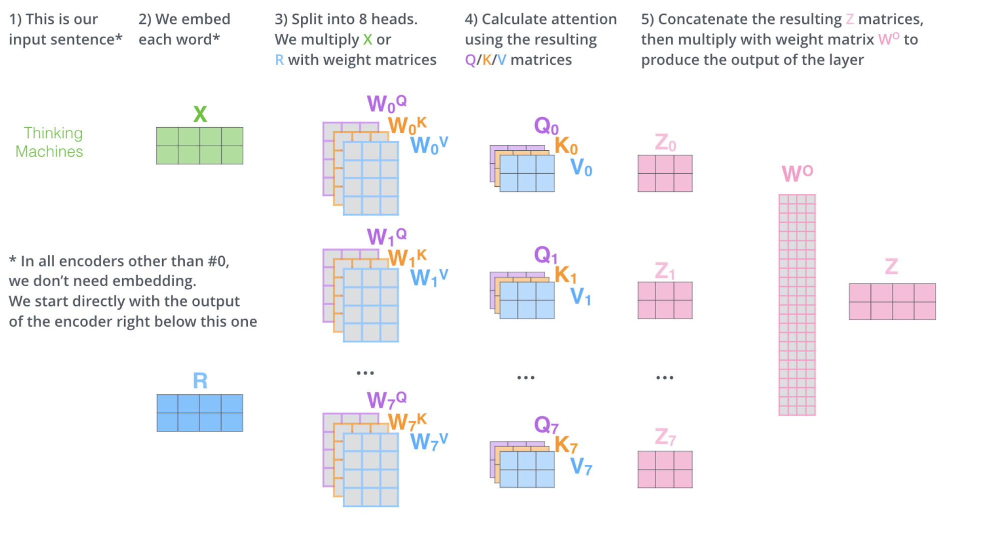

Transformer
图解 Transformer: https://jalammar.github.io/illustrated-transformer/
Q1
Transformer 为何使用多头注意力机制
？ （为什么不使用一个头）
单头注意力只能在一个表示子空间中计算词与词之间的关系。而自然语言中，一个词和其他词的关联是多维度的，例如句子："The animal didn't cross the street because it was too tired."中
- it 这个词需要找到语法主语 (animal)
- 理解语义指代关系
- 感知句子结构中的位置依赖
单个注意力头很难在同一组 Q/K/V 权重中同时捕捉这些不同类型的关系
Q2
Transformer 为什么 Q 和 K 使用不同的权重矩阵生成，为何不能使用同一个值进行自身的点乘？ （注意和第一个问题的区别）
最重要的原因是打破对称性：如果 Q = K（使用同一权重矩阵A[i][j] = A[j][i] ，这意味着 token i 对 token j 的注意力，将永远等于 token j 对 token i 的注意力，但是语言的语义往往是不对称的
例如
Q3
为什么在进行 softmax 之前需要对 attention 进行 scaled（为什么除以 dk 的平方根
） ，并使用公式推导行讲解
核心原因是：attention score 的方差会随着向量维度的增长而增加，从而导致 softmax 结果的不稳定性
设 query 和 key 向量的每个分量独立同分布：
各分量之间相互独立。
点积定义为：
计算期望：
计算方差：
由于各项独立，先算单项的方差：
因此总方差：
可以发现点积 z 的标准差为 \(d_k\)，随维度线性放大
而高方差会导致 softmax 的饱和：
对于序列中的 n 个 token，注意力分数向量为：
当 \(d_k\) 很大时，各 \(z_j\) 的数值量级为 \(\sqrt{d_k}\)，softmax 为：
设某个 \(z_j\) 比其他值大，例如：
softmax 输出趋近于 one-hot，梯度几乎为零：
这就是梯度消失，模型无法有效训练
但是当我们将注意力分数除以 \(\sqrt{d_k}\) 后，定义缩放后的分数：
验证方差：
缩放后 $\tilde{z} \sim \mathcal{N}(0, 1) $，数值范围恢复正常，softmax 工作在 线性区：
这样的注意力分数向量的结果就是合理的，梯度也会变为正常
因此最后得到 Transformer 的缩放点积注意力：
整理一下思路，总结一下就是：
Q4
在计算 attention score 的时候如何对 padding 做 mask 操作？
首先为什么需要 Padding Mask?
因为 batch 训练时，序列长度不同，需要补齐到同一长度，例如
这里的 PAD token 是无意义的填充，不应该被 attend 到，否则会污染注意力分布
在工程层面，忽略掉这些 PAD token 主要是通过构造 padding mask 矩阵标识这些 PAD 的位置，在 softmax 时可以把这些位置的注意力分数标记为 -inf
Q5
为什么在进行多头注意力的时候需要对每个 head 进行降维
？ （可以参考上面一个问题）
多头注意力是建立在单头注意力的基础上的升级版，降维的核心动机主要是保持计算量与单头的注意力机制相同，并且能在最后对结果向量做拼接时保持总维度的不变：即 \(d_k' = d_k / \text{head\_num}\)

Q6
大概讲一下 Transformer 的 Encoder 模块？
输入序列
│
▼
┌─────────────────────────────┐
│ Embedding + PE │ ← 位置编码
└─────────────────────────────┘
│
▼ （重复 N 次）
┌─────────────────────────────┐
│ ┌───────────────────────┐ │
│ │ Multi-Head Attention │ │ ← 子模块 1
│ └───────────────────────┘ │
│ │ │
│ Add & Norm │ ← 残差 + LayerNorm
│ │ │
│ ┌───────────────────────┐ │
│ │ Feed Forward (FFN) │ │ ← 子模块 2
│ └───────────────────────┘ │
│ │ │
│ Add & Norm │ ← 残差 + LayerNorm
└─────────────────────────────┘
│
▼
Encoder 输出（传给 Decoder 或下游任务）
Q7
为何在获取输入词向量之后需要对矩阵乘以 embedding size 的开方？意义是什么？
原始 Transformer 论文中明确提到：在 Embedding 层，将权重矩阵乘以 \(\sqrt{d_\text{model}}\)，即：
核心原因是：Embedding 和 PE 的数值尺度不匹配
Positional Encoding 的值域是固定的：
PE 的每个分量都被限制在 [-1, 1] 之间，数值尺度固定。
Embedding 的值域在训练初期很小：
神经网络初始化时（如 Xavier 初始化
标准差约为：
当 d_model = 512 时，embedding 每个分量的标准差约为 0.044，远小于 PE 的数值范围。
不缩放会发生什么？例如：
Embedding 数值: ~0.044 （很小）
PE 数值: ~[-1, 1] （相对很大）
直接相加：
input = Embedding + PE
≈ 0.044 + 0.7
≈ 0.744 ← PE 主导，Embedding 的语义信息被淹没！
模型几乎只能看到位置信息，词义信息几乎消失。
Q8
简单介绍一下 Transformer 的位置编码？有什么意义和优缺点？
Transformer 完全基于 attention 机制，attention 的计算本质是集合操作——打乱输入顺序不影响结果：
对 attention 来说，两者的输出完全相同（只是位置调换
原论文中采用的是正弦位置编码（Sinusoidal PE
其中 pos 是 token 在序列中的位置，i 是维度索引
- 优点：作为绝对位置编码，使用正 / 余弦相较于直接用位置序号而言，编码值有界，并且能够泛化到未见长度；并且相比可学习的位置编码不需要训练
- 缺点：无法直接建模相对位置的关系，只能依靠 W_k, W_q 来间接学习相对位置关系
Q9
简单讲一下 Transformer 中的残差结构以及意义。
Transformer 中每个子模块的输出都会套一个残差连接：
用图来看是这样：
x ──────────────────────────────┐
│ │
▼ │
Sublayer(x) │ (残差分支)
│ (Multi-Head Attention 或 FFN) │
▼ │
(+) ←──────────────────┘
│
▼
LayerNorm
│
▼
output
残差结构的主要意义就是解决深度网络的梯度消失问题。没有残差时，梯度需要逐层反向传播：
每经过一层都要乘一个雅可比矩阵，层数多了之后连乘结果趋近于 0，梯度消失。
加入残差后：
多了一个常数项 1，无论 Sublayer 的梯度多小，梯度都能通过这条 " 高速公路 " 直接回传到浅层：
Q10
为什么 transformer 块使用 LayerNorm 而不是 BatchNorm？LayerNorm 在 Transformer 的位置是哪里？
先看两者的归一化方向：
输入矩阵 shape: [batch, seq_len, d_model] - BatchNorm：沿 batch 方向归一化 （跨样本，同一特征维度） - LayerNorm：沿 d_model 方向归一化（同一样本，所有特征维度）
用公式表示：
BatchNorm（对每个特征维度，跨 batch 和 seq 计算均值方差
LayerNorm（对每个 token，跨 d_model 计算均值方差
主要原因是 NLP 任务中，batch 中的序列长度是不定的：
例如：样本 1
Q11
简单描述一下 Transformer 中的前馈神经网络？使用了什么激活函数？相关优缺点？
每个 Encoder/Decoder 层中，attention 之后都接一个 FFN，对每个 token 独立做相同的变换：
\(\text{FFN}(x) = \text{Activation}(xW_1 + b_1)W_2 + b_2\)
维度变化：
输入: [batch, seq_len, 512] d_model = 512
│
│ W₁: [512, 2048]
▼
中间层: [batch, seq_len, 2048] d_ff = 2048（扩大4倍）
│
│ 激活函数
▼
│ W₂: [2048, 512]
▼
输出: [batch, seq_len, 512] 还原回 d_model
使用了 RELU 函数
- 优点是计算简单，且梯度相比 sigmoid/tanh 而言（不容易消失）
- 缺点是输入为负时，梯度为 0，导致神经元死亡问题，该神经元会永久停止更新
Q12
Encoder 端和 Decoder 端是如何进行交互的
？ （在这里可以问一下关于 seq2seq 的 attention 知识）
Encoder 的输出以 K 和 V 的形式传入 Decoder，这就是两者交互的核心
每个 Decoder Block 包含三个子模块： Masked Self-Attention --> Cross-Attention --> FFN； Encoder 和 Decoder 端的交互发生在 Cross-Attention 处
Q13
Decoder 阶段的多头自注意力和 encoder 的多头自注意力有什么区别
？ （为什么需要 decoder 自注意力需要进行 sequence mask)
Decoder 的多头自注意力机制是带掩码的；原因是在训练时，Decoder 的输入是一整个 token sequence，而每个 token 不应该看到位于它后面的 token
Q14
Transformer 的并行化体现在哪个地方？Decoder 端可以做并行化吗？
-
Encoder 的并行化是完全并行的，Encoder 的 Self-Attention 中，每个 token 的 Q,K,V 计算完全独立，可以同时进行
- 整个 attention 的计算就是一个大矩阵乘法：
\[ QK^T = (XW_Q)(XW_K)^T \] -
Decoder 也类似，在训练时是可以并行的，因为目标序列已知，可以用 Causal Mask 模拟自回归；但是在推理过程是必须串行的，因为推理做的词语接龙过程天然就是串行的；但是推理过程每一步重复计算前一步 token 的 K、V 是一种浪费，所以就会引入 KV Cache 技术
Q15
Transformer 训练的时候学习率是如何设定的？Dropout 是如何设定的，位置在哪里？Dropout 在测试的需要有什么需要注意的吗？
- 原论文的训练采用了 Warmup 的策略，让学习率随训练步数先上升后下降
- Dropout 设置在了三个地方
- Embedding + PE 之后
- 每个子模块的残差相加之前，也就是先 Dropout 再做残差连接
- Attention 注意力分数在 softmax 后，与 V 相乘前也会做 Dropout
- 测试的时候关掉 Dropout 即可，因为 Dropout 的随机性是训练专用的正则化手段，测试 / 推理时需要稳定确定的预测
Q16
解码端的残差结构有没有把后续未被看见的 mask 信息添加进来，造成信息的泄露。
不会，残差连接是对每个 token 独立的：
每个 token 经过 masked-attention 层得到包含了在它之前的注意力权重的 token 向量，然后再去和原先的 token 向量相加，不会包含该 token 后的 token 信息